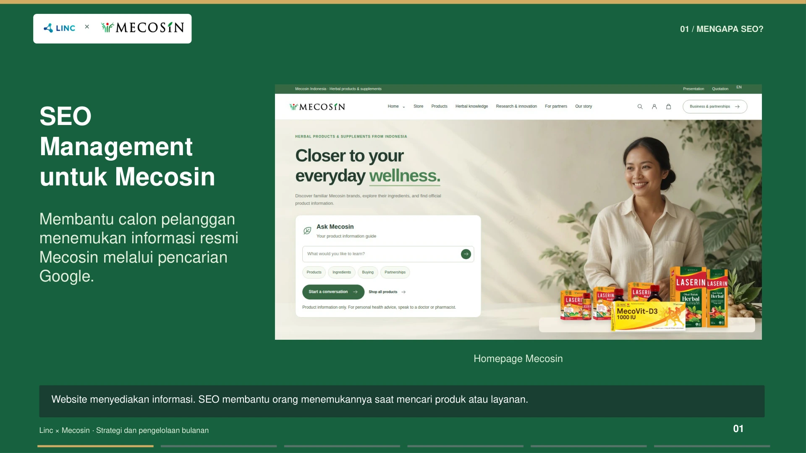
×
01 / MENGAPA SEO?
SEO
Management
untuk Mecosin
Membantu calon pelanggan menemukan informasi resmi Mecosin melalui pencarian Google.
Linc × Mecosin · Strategi dan pengelolaan bulanan
01
Website menyediakan informasi. SEO membantu orang menemukannya saat mencari produk atau layanan.
Homepage Mecosin
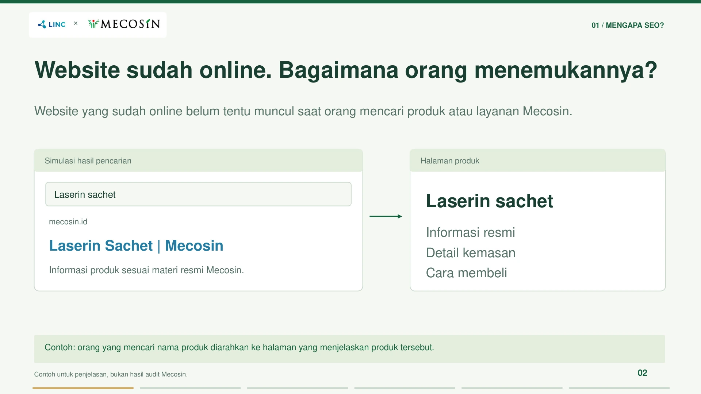
×
01 / MENGAPA SEO?
Website sudah online. Bagaimana orang menemukannya?
Website yang sudah online belum tentu muncul saat orang mencari produk atau layanan Mecosin.
Contoh untuk penjelasan, bukan hasil audit Mecosin.
02
Simulasi hasil pencarian
Laserin sachet
mecosin.id
Laserin Sachet | Mecosin
Informasi produk sesuai materi resmi Mecosin.
Halaman produk
Laserin sachet
Informasi resmi
Detail kemasan
Cara membeli
Contoh: orang yang mencari nama produk diarahkan ke halaman yang menjelaskan produk tersebut.
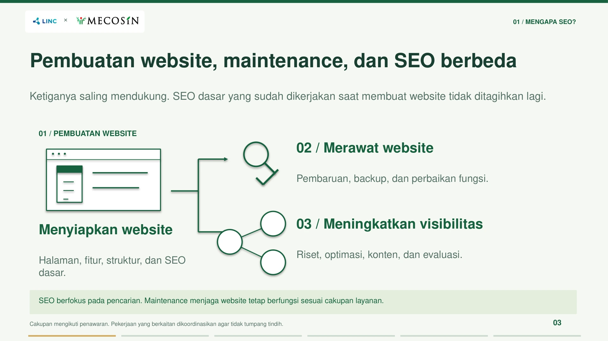
×
01 / MENGAPA SEO?
Pembuatan website, maintenance, dan SEO berbeda
Ketiganya saling mendukung. SEO dasar yang sudah dikerjakan saat membuat website tidak ditagihkan lagi.
Cakupan mengikuti penawaran. Pekerjaan yang berkaitan dikoordinasikan agar tidak tumpang tindih.
03
SEO berfokus pada pencarian. Maintenance menjaga website tetap berfungsi sesuai cakupan layanan.
01 / PEMBUATAN WEBSITE
Menyiapkan website
Halaman, fitur, struktur, dan SEO dasar.
02 / Merawat website
Pembaruan, backup, dan perbaikan fungsi.
03 / Meningkatkan visibilitas
Riset, optimasi, konten, dan evaluasi.
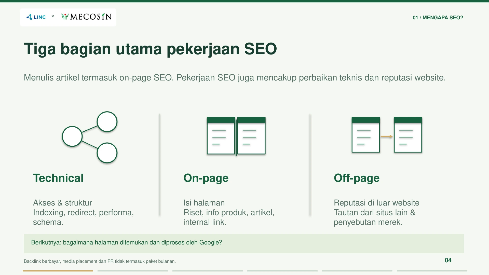
×
01 / MENGAPA SEO?
Tiga bagian utama pekerjaan SEO
Menulis artikel termasuk on-page SEO. Pekerjaan SEO juga mencakup perbaikan teknis dan reputasi website.
Backlink berbayar, media placement dan PR tidak termasuk paket bulanan.
04
Berikutnya: bagaimana halaman ditemukan dan diproses oleh Google?
Technical
Akses & struktur
Indexing, redirect, performa, schema.
On-page
Isi halaman
Riset, info produk, artikel, internal link.
Off-page
Reputasi di luar website
Tautan dari situs lain & penyebutan merek.
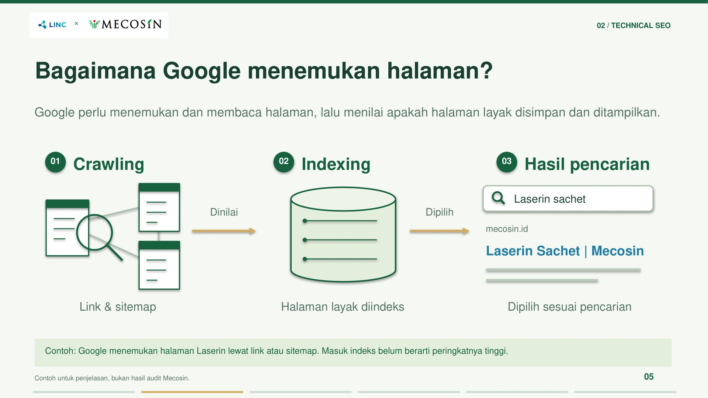
×
02 / TECHNICAL SEO
Bagaimana Google menemukan halaman?
Google perlu menemukan dan membaca halaman, lalu menilai apakah halaman layak disimpan dan ditampilkan.
Contoh untuk penjelasan, bukan hasil audit Mecosin.
05
Contoh: Google menemukan halaman Laserin lewat link atau sitemap. Masuk indeks belum berarti peringkatnya tinggi.
01
Crawling
02
Indexing
03
Hasil pencarian
Link & sitemap
Dinilai
Halaman layak diindeks
Dipilih
Laserin sachet
mecosin.id
Laserin Sachet | Mecosin
Dipilih sesuai pencarian
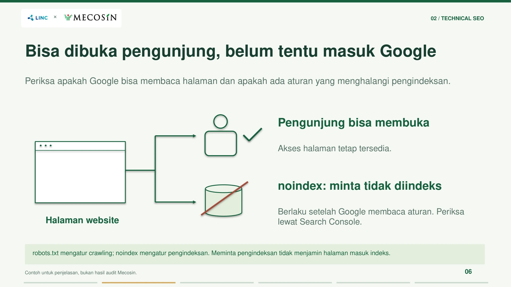
×
02 / TECHNICAL SEO
Bisa dibuka pengunjung, belum tentu masuk Google
Periksa apakah Google bisa membaca halaman dan apakah ada aturan yang menghalangi pengindeksan.
Contoh untuk penjelasan, bukan hasil audit Mecosin.
06
robots.txt mengatur crawling; noindex mengatur pengindeksan. Meminta pengindeksan tidak menjamin halaman masuk indeks.
Halaman website
Pengunjung bisa membuka
Akses halaman tetap tersedia.
noindex: minta tidak diindeks
Berlaku setelah Google membaca aturan. Periksa lewat Search Console.
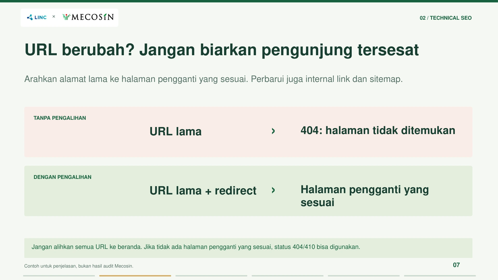
×
02 / TECHNICAL SEO
URL berubah? Jangan biarkan pengunjung tersesat
Arahkan alamat lama ke halaman pengganti yang sesuai. Perbarui juga internal link dan sitemap.
Contoh untuk penjelasan, bukan hasil audit Mecosin.
07
TANPA PENGALIHAN
URL lama
›
404: halaman tidak ditemukan
DENGAN PENGALIHAN
URL lama + redirect
›
Halaman pengganti yang sesuai
Jangan alihkan semua URL ke beranda. Jika tidak ada halaman pengganti yang sesuai, status 404/410 bisa digunakan.
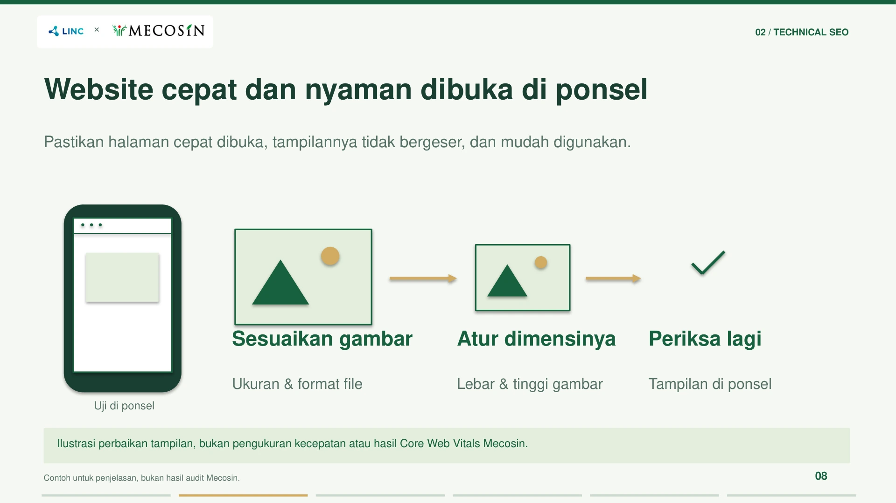
×
02 / TECHNICAL SEO
Website cepat dan nyaman dibuka di ponsel
Pastikan halaman cepat dibuka, tampilannya tidak bergeser, dan mudah digunakan.
Contoh untuk penjelasan, bukan hasil audit Mecosin.
08
Ilustrasi perbaikan tampilan, bukan pengukuran kecepatan atau hasil Core Web Vitals Mecosin.
Uji di ponsel
Sesuaikan gambar
Ukuran & format file
Atur dimensinya
Lebar & tinggi gambar
Periksa lagi
Tampilan di ponsel
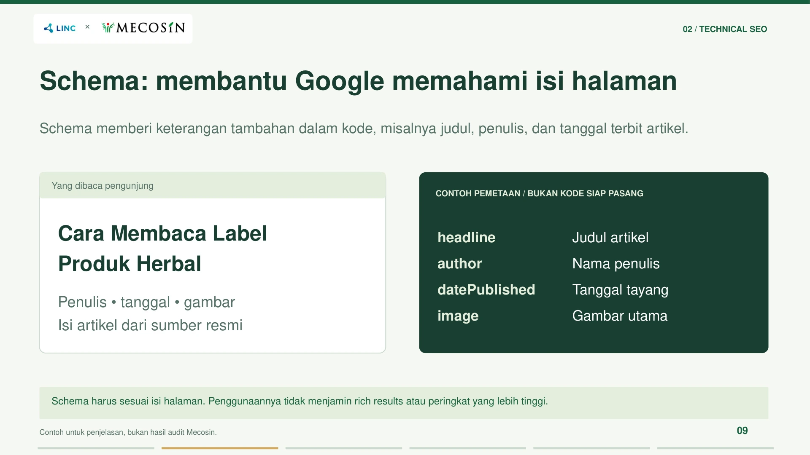
×
02 / TECHNICAL SEO
Schema: membantu Google memahami isi halaman
Schema memberi keterangan tambahan dalam kode, misalnya judul, penulis, dan tanggal terbit artikel.
Contoh untuk penjelasan, bukan hasil audit Mecosin.
09
Yang dibaca pengunjung
Cara Membaca Label
Produk Herbal
Penulis • tanggal • gambar
Isi artikel dari sumber resmi
CONTOH PEMETAAN / BUKAN KODE SIAP PASANG
headline
Judul artikel
author
Nama penulis
datePublished
Tanggal tayang
image
Gambar utama
Schema harus sesuai isi halaman. Penggunaannya tidak menjamin rich results atau peringkat yang lebih tinggi.
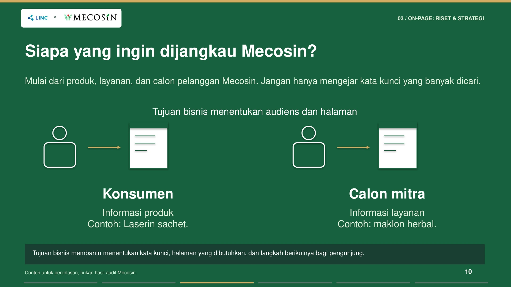
×
03 / ON-PAGE: RISET & STRATEGI
Siapa yang ingin dijangkau Mecosin?
Mulai dari produk, layanan, dan calon pelanggan Mecosin. Jangan hanya mengejar kata kunci yang banyak dicari.
Contoh untuk penjelasan, bukan hasil audit Mecosin.
10
Tujuan bisnis membantu menentukan kata kunci, halaman yang dibutuhkan, dan langkah berikutnya bagi pengunjung.
Konsumen
Informasi produk
Contoh: Laserin sachet.
Calon mitra
Informasi layanan
Contoh: maklon herbal.
Tujuan bisnis menentukan audiens dan halaman
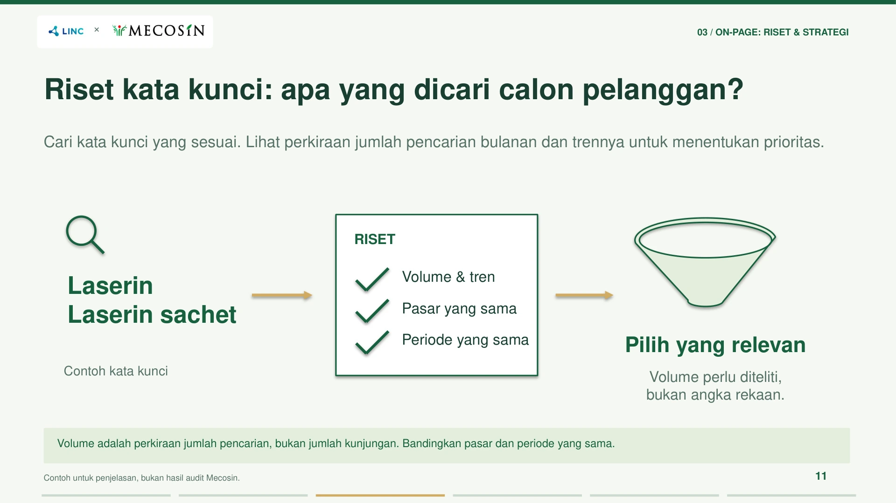
×
03 / ON-PAGE: RISET & STRATEGI
Riset kata kunci: apa yang dicari calon pelanggan?
Cari kata kunci yang sesuai. Lihat perkiraan jumlah pencarian bulanan dan trennya untuk menentukan prioritas.
Contoh untuk penjelasan, bukan hasil audit Mecosin.
11
Volume adalah perkiraan jumlah pencarian, bukan jumlah kunjungan. Bandingkan pasar dan periode yang sama.
Laserin
Laserin sachet
Contoh kata kunci
RISET
Volume & tren
Pasar yang sama
Periode yang sama
Pilih yang relevan
Volume perlu diteliti,
bukan angka rekaan.
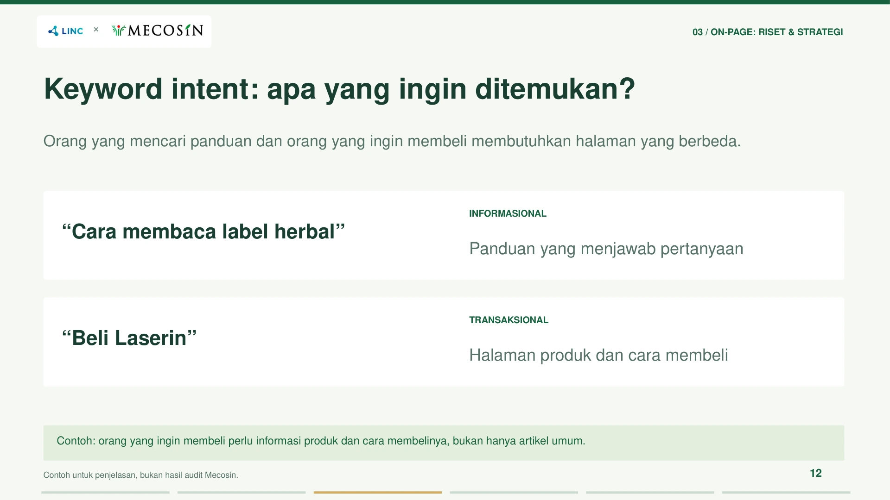
×
03 / ON-PAGE: RISET & STRATEGI
Keyword intent: apa yang ingin ditemukan?
Orang yang mencari panduan dan orang yang ingin membeli membutuhkan halaman yang berbeda.
Contoh untuk penjelasan, bukan hasil audit Mecosin.
12
“Cara membaca label herbal”
INFORMASIONAL
Panduan yang menjawab pertanyaan
“Beli Laserin”
TRANSAKSIONAL
Halaman produk dan cara membeli
Contoh: orang yang ingin membeli perlu informasi produk dan cara membelinya, bukan hanya artikel umum.
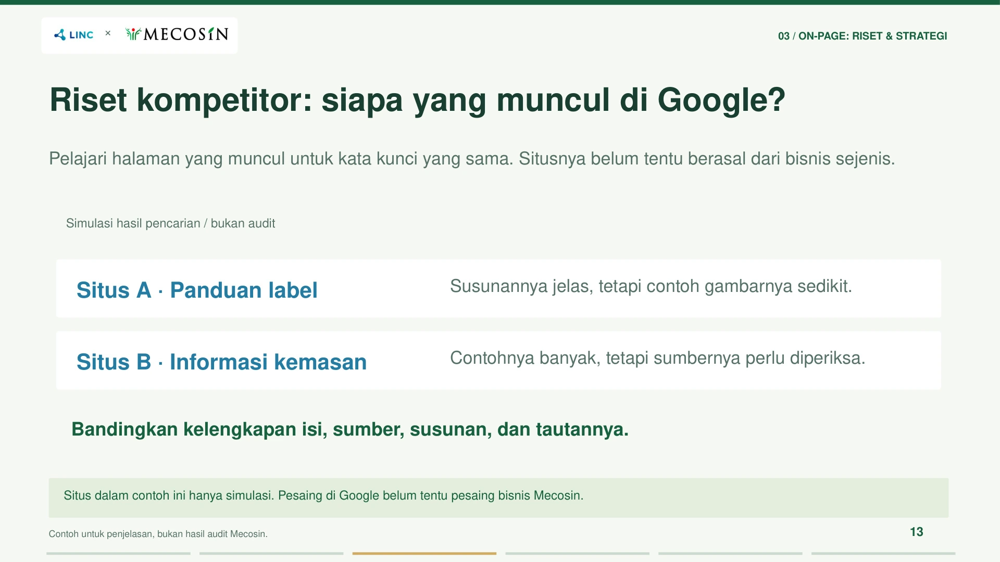
×
03 / ON-PAGE: RISET & STRATEGI
Riset kompetitor: siapa yang muncul di Google?
Pelajari halaman yang muncul untuk kata kunci yang sama. Situsnya belum tentu berasal dari bisnis sejenis.
Contoh untuk penjelasan, bukan hasil audit Mecosin.
13
Situs dalam contoh ini hanya simulasi. Pesaing di Google belum tentu pesaing bisnis Mecosin.
Simulasi hasil pencarian / bukan audit
Situs A · Panduan label
Susunannya jelas, tetapi contoh gambarnya sedikit.
Situs B · Informasi kemasan
Contohnya banyak, tetapi sumbernya perlu diperiksa.
Bandingkan kelengkapan isi, sumber, susunan, dan tautannya.
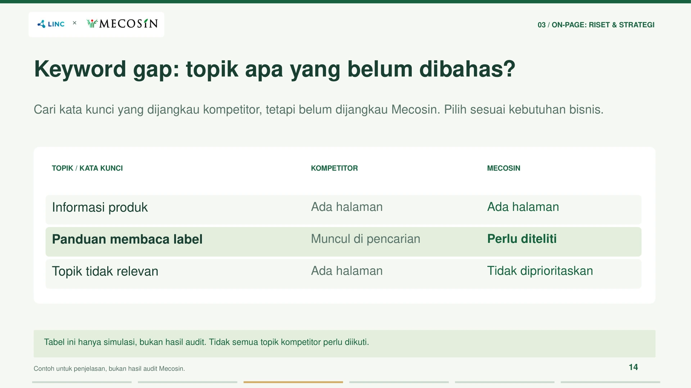
×
03 / ON-PAGE: RISET & STRATEGI
Keyword gap: topik apa yang belum dibahas?
Cari kata kunci yang dijangkau kompetitor, tetapi belum dijangkau Mecosin. Pilih sesuai kebutuhan bisnis.
Contoh untuk penjelasan, bukan hasil audit Mecosin.
14
TOPIK / KATA KUNCI
KOMPETITOR
MECOSIN
Informasi produk
Ada halaman
Ada halaman
Panduan membaca label
Muncul di pencarian
Perlu diteliti
Topik tidak relevan
Ada halaman
Tidak diprioritaskan
Tabel ini hanya simulasi, bukan hasil audit. Tidak semua topik kompetitor perlu diikuti.
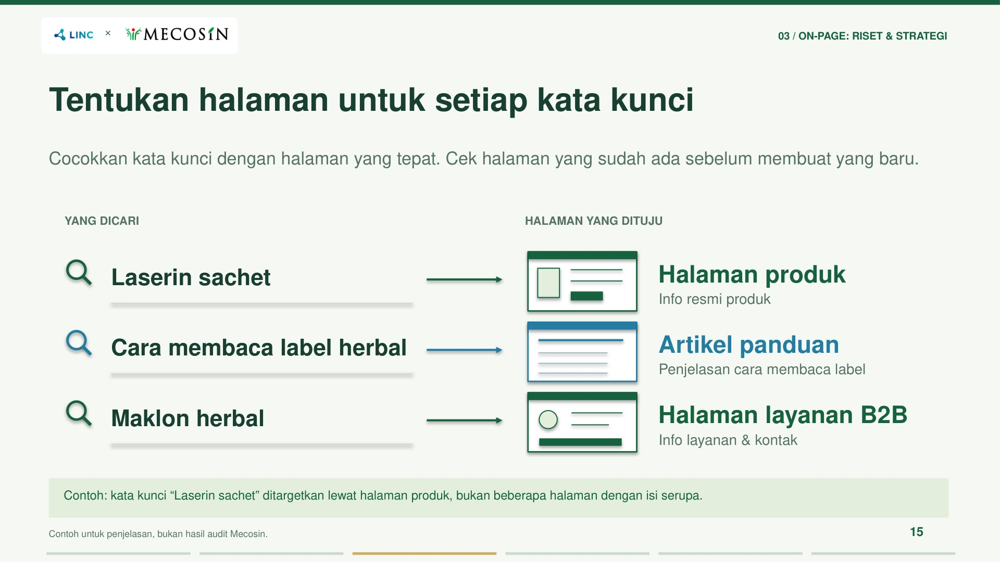
×
03 / ON-PAGE: RISET & STRATEGI
Tentukan halaman untuk setiap kata kunci
Cocokkan kata kunci dengan halaman yang tepat. Cek halaman yang sudah ada sebelum membuat yang baru.
Contoh untuk penjelasan, bukan hasil audit Mecosin.
15
Contoh: kata kunci “Laserin sachet” ditargetkan lewat halaman produk, bukan beberapa halaman dengan isi serupa.
YANG DICARI
HALAMAN YANG DITUJU
Laserin sachet
Halaman produk
Info resmi produk
Cara membaca label herbal
Artikel panduan
Penjelasan cara membaca label
Maklon herbal
Halaman layanan B2B
Info layanan & kontak
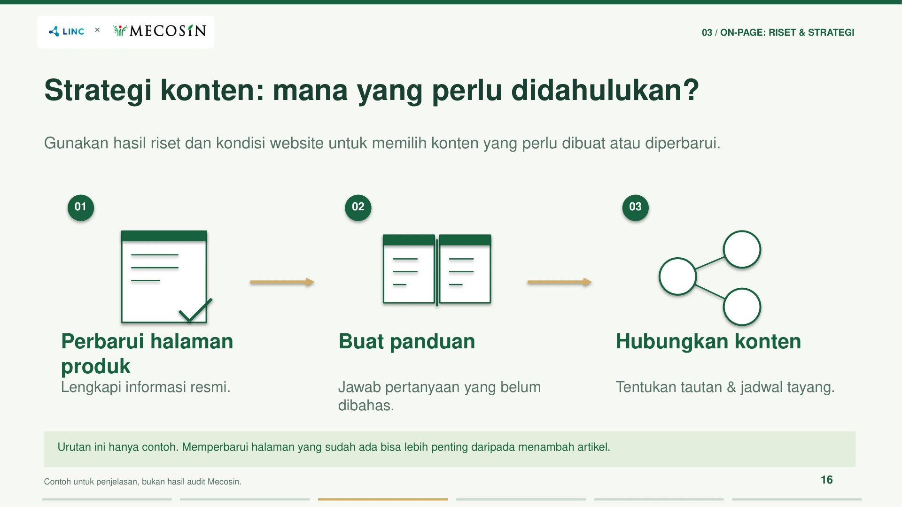
×
03 / ON-PAGE: RISET & STRATEGI
Strategi konten: mana yang perlu didahulukan?
Gunakan hasil riset dan kondisi website untuk memilih konten yang perlu dibuat atau diperbarui.
Contoh untuk penjelasan, bukan hasil audit Mecosin.
16
Urutan ini hanya contoh. Memperbarui halaman yang sudah ada bisa lebih penting daripada menambah artikel.
01
Perbarui halaman produk
Lengkapi informasi resmi.
02
Buat panduan
Jawab pertanyaan yang belum dibahas.
03
Hubungkan konten
Tentukan tautan & jadwal tayang.
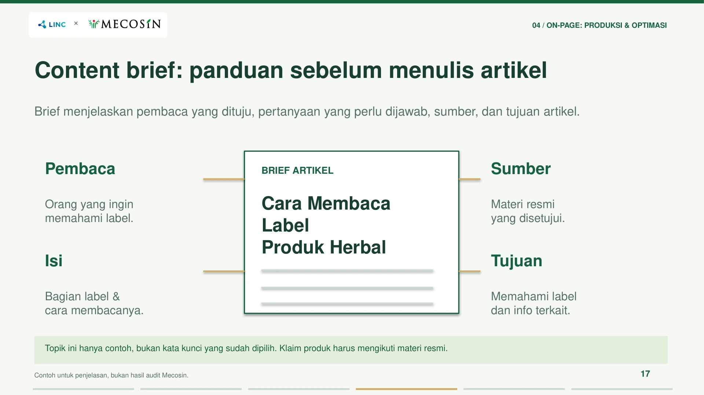
×
04 / ON-PAGE: PRODUKSI & OPTIMASI
Content brief: panduan sebelum menulis artikel
Brief menjelaskan pembaca yang dituju, pertanyaan yang perlu dijawab, sumber, dan tujuan artikel.
Contoh untuk penjelasan, bukan hasil audit Mecosin.
17
Topik ini hanya contoh, bukan kata kunci yang sudah dipilih. Klaim produk harus mengikuti materi resmi.
BRIEF ARTIKEL
Cara Membaca Label
Produk Herbal
Pembaca
Orang yang ingin
memahami label.
Isi
Bagian label &
cara membacanya.
Sumber
Materi resmi
yang disetujui.
Tujuan
Memahami label
dan info terkait.
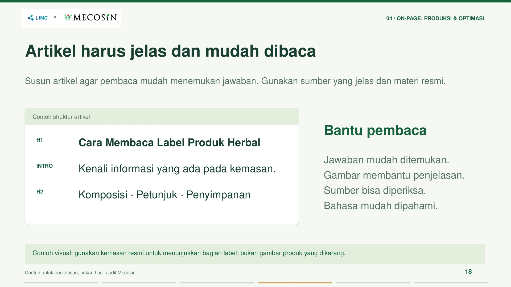
×
04 / ON-PAGE: PRODUKSI & OPTIMASI
Artikel harus jelas dan mudah dibaca
Susun artikel agar pembaca mudah menemukan jawaban. Gunakan sumber yang jelas dan materi resmi.
Contoh untuk penjelasan, bukan hasil audit Mecosin.
18
Contoh struktur artikel
H1
Cara Membaca Label Produk Herbal
INTRO
Kenali informasi yang ada pada kemasan.
H2
Komposisi · Petunjuk · Penyimpanan
Bantu pembaca
Jawaban mudah ditemukan.
Gambar membantu penjelasan.
Sumber bisa diperiksa.
Bahasa mudah dipahami.
Contoh visual: gunakan kemasan resmi untuk menunjukkan bagian label; bukan gambar produk yang dikarang.
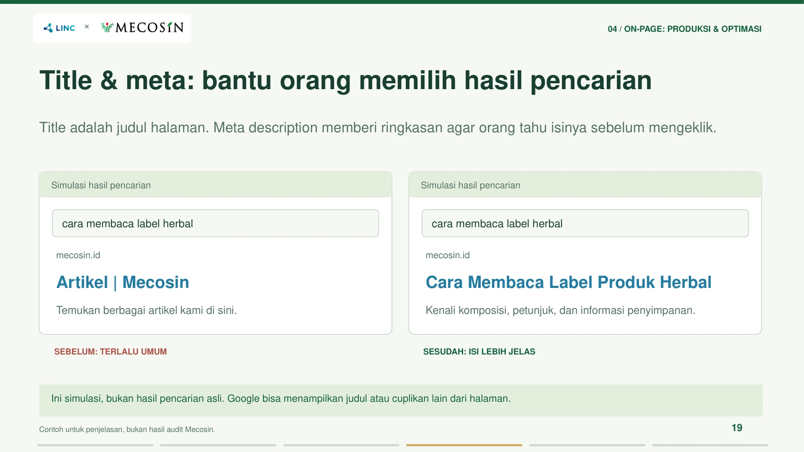
×
04 / ON-PAGE: PRODUKSI & OPTIMASI
Title & meta: bantu orang memilih hasil pencarian
Title adalah judul halaman. Meta description memberi ringkasan agar orang tahu isinya sebelum mengeklik.
Contoh untuk penjelasan, bukan hasil audit Mecosin.
19
Simulasi hasil pencarian
cara membaca label herbal
mecosin.id
Artikel | Mecosin
Temukan berbagai artikel kami di sini.
Simulasi hasil pencarian
cara membaca label herbal
mecosin.id
Cara Membaca Label Produk Herbal
Kenali komposisi, petunjuk, dan informasi penyimpanan.
SEBELUM: TERLALU UMUM
SESUDAH: ISI LEBIH JELAS
Ini simulasi, bukan hasil pencarian asli. Google bisa menampilkan judul atau cuplikan lain dari halaman.
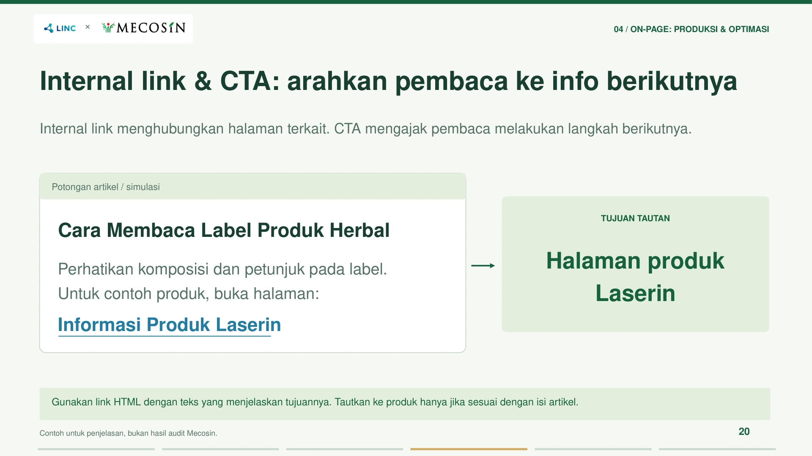
×
04 / ON-PAGE: PRODUKSI & OPTIMASI
Internal link & CTA: arahkan pembaca ke info berikutnya
Internal link menghubungkan halaman terkait. CTA mengajak pembaca melakukan langkah berikutnya.
Contoh untuk penjelasan, bukan hasil audit Mecosin.
20
Potongan artikel / simulasi
Cara Membaca Label Produk Herbal
Perhatikan komposisi dan petunjuk pada label.
Untuk contoh produk, buka halaman:
Informasi Produk Laserin
TUJUAN TAUTAN
Halaman produk
Laserin
Gunakan link HTML dengan teks yang menjelaskan tujuannya. Tautkan ke produk hanya jika sesuai dengan isi artikel.
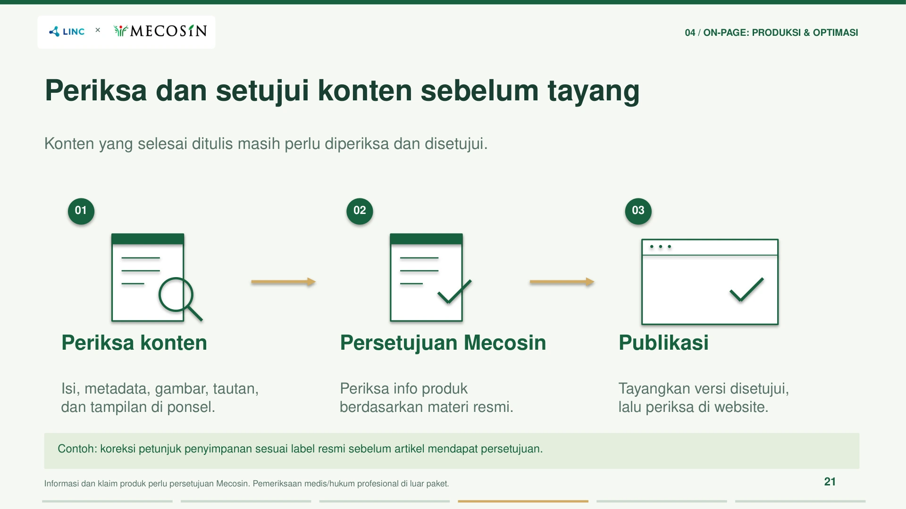
×
04 / ON-PAGE: PRODUKSI & OPTIMASI
Periksa dan setujui konten sebelum tayang
Konten yang selesai ditulis masih perlu diperiksa dan disetujui.
Informasi dan klaim produk perlu persetujuan Mecosin. Pemeriksaan medis/hukum profesional di luar paket.
21
Contoh: koreksi petunjuk penyimpanan sesuai label resmi sebelum artikel mendapat persetujuan.
01
Periksa konten
Isi, metadata, gambar, tautan,
dan tampilan di ponsel.
02
Persetujuan Mecosin
Periksa info produk
berdasarkan materi resmi.
03
Publikasi
Tayangkan versi disetujui,
lalu periksa di website.
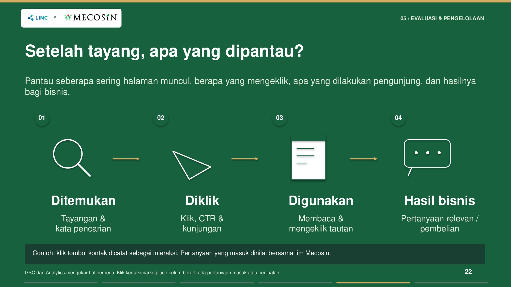
×
05 / EVALUASI & PENGELOLAAN
Setelah tayang, apa yang dipantau?
Pantau seberapa sering halaman muncul, berapa yang mengeklik, apa yang dilakukan pengunjung, dan hasilnya bagi bisnis.
GSC dan Analytics mengukur hal berbeda. Klik kontak/marketplace belum berarti ada pertanyaan masuk atau penjualan.
22
Contoh: klik tombol kontak dicatat sebagai interaksi. Pertanyaan yang masuk dinilai bersama tim Mecosin.
01
Ditemukan
Tayangan &
kata pencarian
02
Diklik
Klik, CTR &
kunjungan
03
Digunakan
Membaca &
mengeklik tautan
04
Hasil bisnis
Pertanyaan relevan /
pembelian
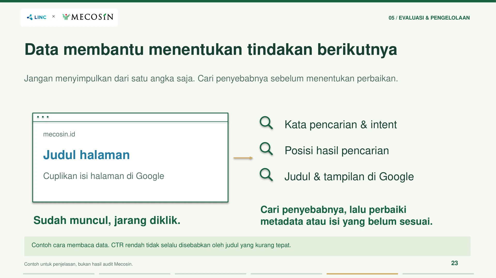
×
05 / EVALUASI & PENGELOLAAN
Data membantu menentukan tindakan berikutnya
Jangan menyimpulkan dari satu angka saja. Cari penyebabnya sebelum menentukan perbaikan.
Contoh untuk penjelasan, bukan hasil audit Mecosin.
23
Contoh cara membaca data. CTR rendah tidak selalu disebabkan oleh judul yang kurang tepat.
mecosin.id
Judul halaman
Cuplikan isi halaman di Google
Sudah muncul, jarang diklik.
Kata pencarian & intent
Posisi hasil pencarian
Judul & tampilan di Google
Cari penyebabnya, lalu perbaiki
metadata atau isi yang belum sesuai.
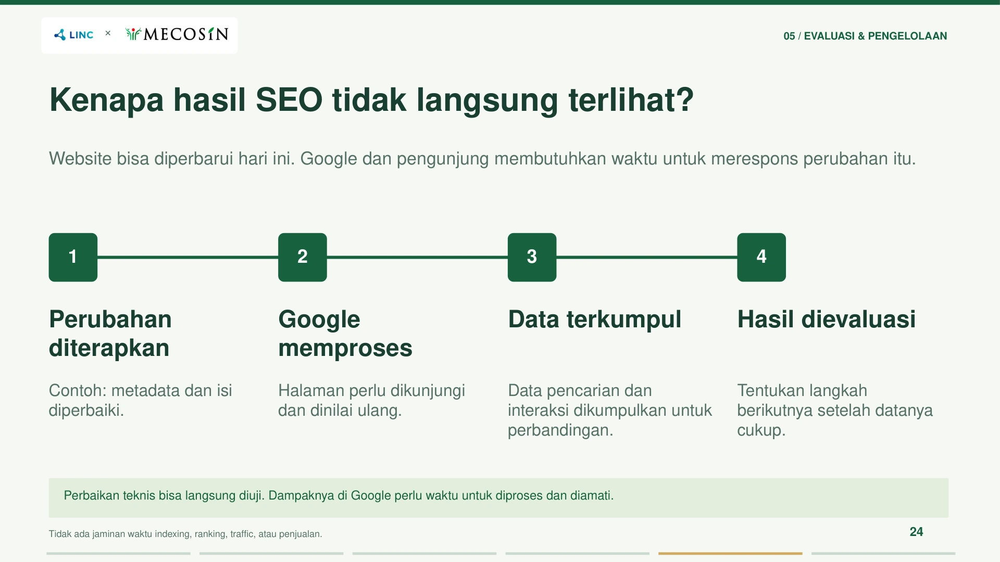
×
05 / EVALUASI & PENGELOLAAN
Kenapa hasil SEO tidak langsung terlihat?
Website bisa diperbarui hari ini. Google dan pengunjung membutuhkan waktu untuk merespons perubahan itu.
Tidak ada jaminan waktu indexing, ranking, traffic, atau penjualan.
24
1
Perubahan diterapkan
Contoh: metadata dan isi diperbaiki.
2
Google memproses
Halaman perlu dikunjungi dan dinilai ulang.
3
Data terkumpul
Data pencarian dan interaksi dikumpulkan untuk perbandingan.
4
Hasil dievaluasi
Tentukan langkah berikutnya setelah datanya cukup.
Perbaikan teknis bisa langsung diuji. Dampaknya di Google perlu waktu untuk diproses dan diamati.
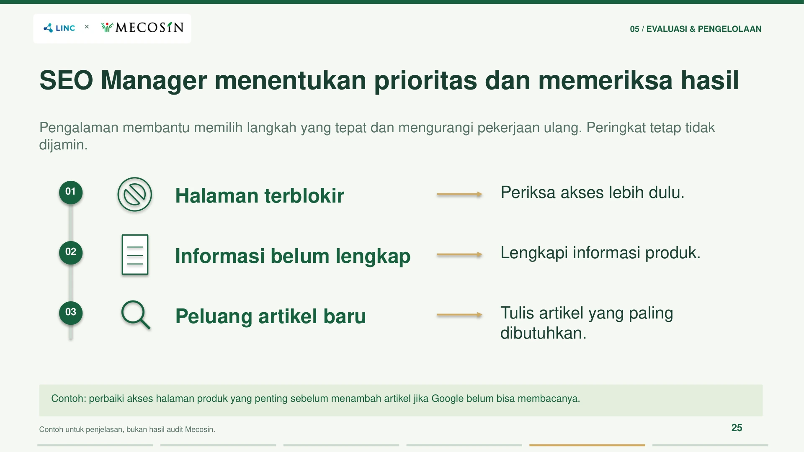
×
05 / EVALUASI & PENGELOLAAN
SEO Manager menentukan prioritas dan memeriksa hasil
Pengalaman membantu memilih langkah yang tepat dan mengurangi pekerjaan ulang. Peringkat tetap tidak dijamin.
Contoh untuk penjelasan, bukan hasil audit Mecosin.
25
Contoh: perbaiki akses halaman produk yang penting sebelum menambah artikel jika Google belum bisa membacanya.
01
Halaman terblokir
Periksa akses lebih dulu.
02
Informasi belum lengkap
Lengkapi informasi produk.
03
Peluang artikel baru
Tulis artikel yang paling dibutuhkan.
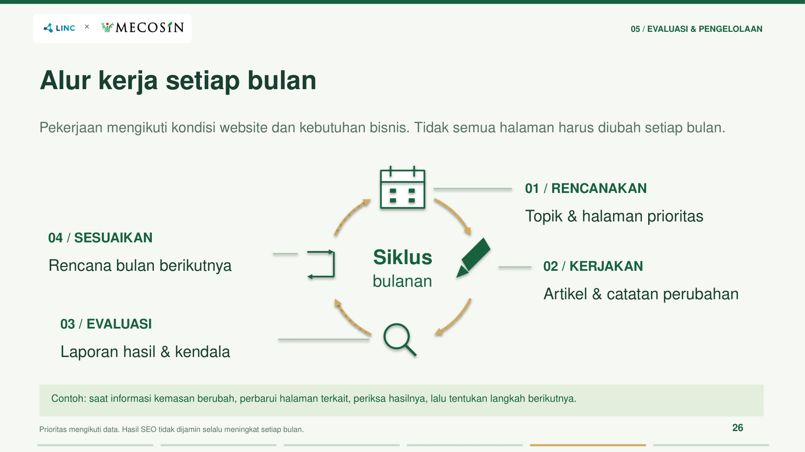
×
05 / EVALUASI & PENGELOLAAN
Alur kerja setiap bulan
Pekerjaan mengikuti kondisi website dan kebutuhan bisnis. Tidak semua halaman harus diubah setiap bulan.
Prioritas mengikuti data. Hasil SEO tidak dijamin selalu meningkat setiap bulan.
26
Contoh: saat informasi kemasan berubah, perbarui halaman terkait, periksa hasilnya, lalu tentukan langkah berikutnya.
Siklus
bulanan
01 / RENCANAKAN
Topik & halaman prioritas
02 / KERJAKAN
Artikel & catatan perubahan
03 / EVALUASI
Laporan hasil & kendala
04 / SESUAIKAN
Rencana bulan berikutnya
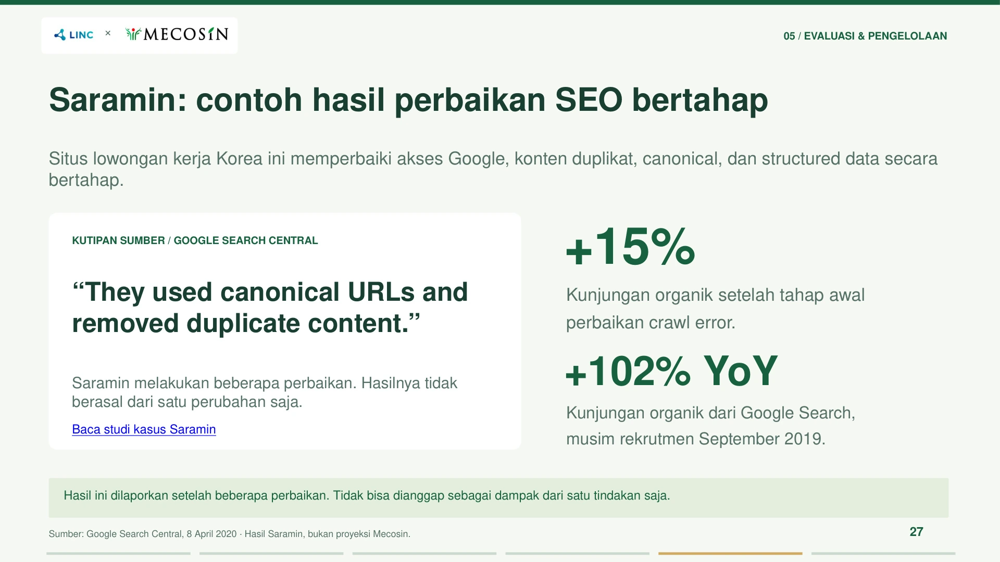
×
05 / EVALUASI & PENGELOLAAN
Saramin: contoh hasil perbaikan SEO bertahap
Situs lowongan kerja Korea ini memperbaiki akses Google, konten duplikat, canonical, dan structured data secara bertahap.
Sumber: Google Search Central, 8 April 2020 · Hasil Saramin, bukan proyeksi Mecosin.
27
KUTIPAN SUMBER / GOOGLE SEARCH CENTRAL
“They used canonical URLs and removed duplicate content.”
Saramin melakukan beberapa perbaikan. Hasilnya tidak berasal dari satu perubahan saja.
Baca studi kasus Saramin
+15%
Kunjungan organik setelah tahap awal
perbaikan crawl error.
+102% YoY
Kunjungan organik dari Google Search,
musim rekrutmen September 2019.
Hasil ini dilaporkan setelah beberapa perbaikan. Tidak bisa dianggap sebagai dampak dari satu tindakan saja.
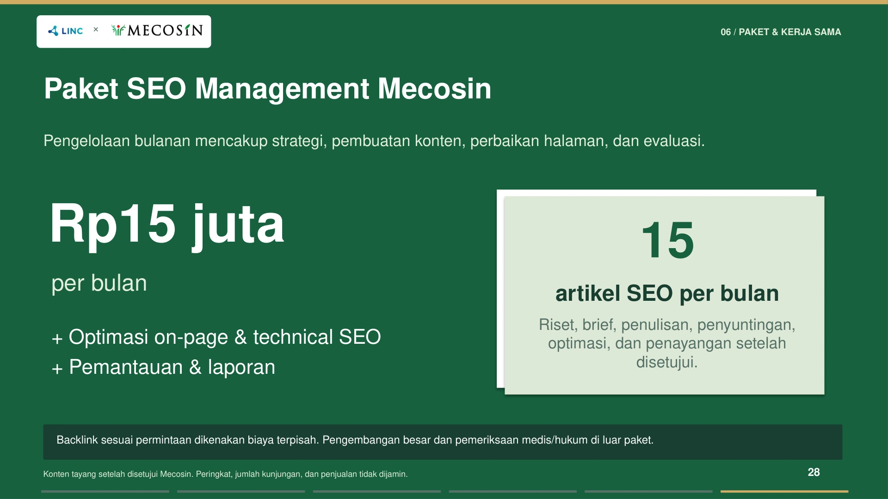
×
06 / PAKET & KERJA SAMA
Paket SEO Management Mecosin
Pengelolaan bulanan mencakup strategi, pembuatan konten, perbaikan halaman, dan evaluasi.
Konten tayang setelah disetujui Mecosin. Peringkat, jumlah kunjungan, dan penjualan tidak dijamin.
28
Rp15 juta
per bulan
15
artikel SEO per bulan
Riset, brief, penulisan, penyuntingan, optimasi, dan penayangan setelah disetujui.
+ Optimasi on-page & technical SEO
+ Pemantauan & laporan
Backlink sesuai permintaan dikenakan biaya terpisah. Pengembangan besar dan pemeriksaan medis/hukum di luar paket.
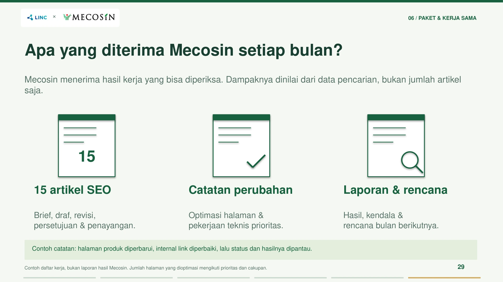
×
06 / PAKET & KERJA SAMA
Apa yang diterima Mecosin setiap bulan?
Mecosin menerima hasil kerja yang bisa diperiksa. Dampaknya dinilai dari data pencarian, bukan jumlah artikel saja.
Contoh daftar kerja, bukan laporan hasil Mecosin. Jumlah halaman yang dioptimasi mengikuti prioritas dan cakupan.
29
Contoh catatan: halaman produk diperbarui, internal link diperbaiki, lalu status dan hasilnya dipantau.
15
15 artikel SEO
Brief, draf, revisi,
persetujuan & penayangan.
Catatan perubahan
Optimasi halaman &
pekerjaan teknis prioritas.
Laporan & rencana
Hasil, kendala &
rencana bulan berikutnya.
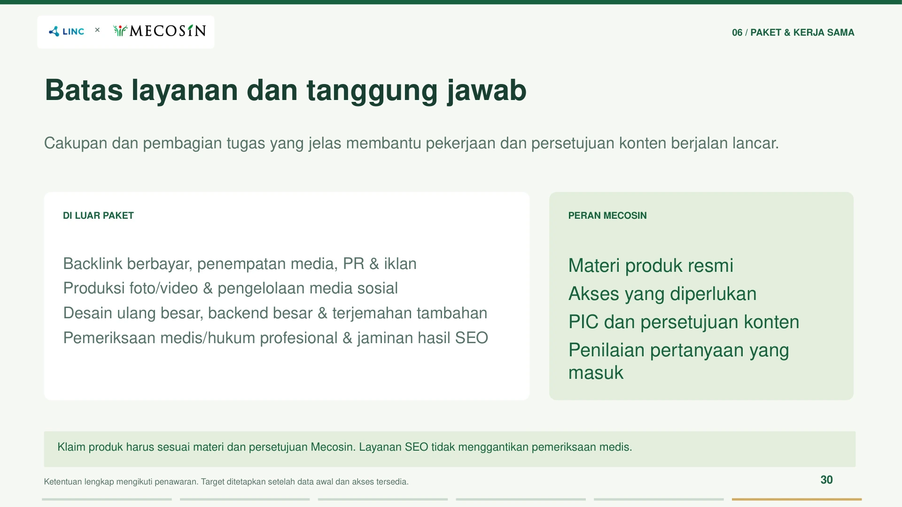
×
06 / PAKET & KERJA SAMA
Batas layanan dan tanggung jawab
Cakupan dan pembagian tugas yang jelas membantu pekerjaan dan persetujuan konten berjalan lancar.
Ketentuan lengkap mengikuti penawaran. Target ditetapkan setelah data awal dan akses tersedia.
30
DI LUAR PAKET
Backlink berbayar, penempatan media, PR & iklan
Produksi foto/video & pengelolaan media sosial
Desain ulang besar, backend besar & terjemahan tambahan
Pemeriksaan medis/hukum profesional & jaminan hasil SEO
PERAN MECOSIN
Materi produk resmi
Akses yang diperlukan
PIC dan persetujuan konten
Penilaian pertanyaan yang masuk
Klaim produk harus sesuai materi dan persetujuan Mecosin. Layanan SEO tidak menggantikan pemeriksaan medis.
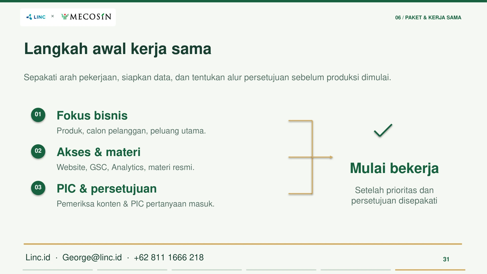
×
06 / PAKET & KERJA SAMA
Langkah awal kerja sama
Sepakati arah pekerjaan, siapkan data, dan tentukan alur persetujuan sebelum produksi dimulai.
31
Linc.id · George@linc.id · +62 811 1666 218
01
Fokus bisnis
Produk, calon pelanggan, peluang utama.
02
Akses & materi
Website, GSC, Analytics, materi resmi.
03
PIC & persetujuan
Pemeriksa konten & PIC pertanyaan masuk.
Mulai bekerja
Setelah prioritas dan
persetujuan disepakati